Docs / The edit loop / Verify
Reading a verify result
Every edit ends at verify. It answers in three tiers and a few computed metrics — read them, then ship, re-narrow, or stop.
verify(diagram)
✓ ok structural 0 geometric 0 lint 1
// COMMENT_DROPPED line 4 — inline %% comment removed on serializeThe tiers are ordered by severity. A structuralTier 1 — the graph is malformed: a dangling edge, a duplicate id, an edge to a node that isn’t there. Structural warnings block serialize; never ship past one. Zero here. warning means the graph itself is malformed, so it blocks serialize outright. A geometricTier 2 — valid but ugly: overlapping nodes, a label crossing an edge, a port on the wrong side. Advisory, not fatal — an agent may accept them. warning means the layout is valid but ugly — advisory, and an agent may choose to live with it.
LintTier 3 — style and lossiness: a non-canonical arrow, or a %% comment dropped on serialize because the typed model has nowhere to keep it. is the cosmetic tier — style and lossiness, like the dropped commentCOMMENT_DROPPED, line 4. The inline comment isn’t representable in the model. Move it onto its own line above the node to keep it. flagged on line 4. An agent reads the three tiers and decides whether to fix, re-narrow, or stop and ask a human.
Beneath the tiers sit the perceptual metrics — not asserted but computed from the finished layout.Scored by the deterministic rubric in layout-rubric.ts. The same diagram always scores the same, so you can diff a metric across edits and watch it move rather than trust a claim. Across the five edits this diagram took, legibility climbed to 0.98 and edge crossings fell to 0.
The loop that produced it verify sits between mutate and serialize; a warning routes the work back to narrow. is the familiar one — parse, narrow, mutate, verify, serialize. Verify is the gate, and the one step a render-only tool never gives you: it is why an agent can edit a diagram in place instead of regenerating the whole thing and hoping the parts that were already right survive.
Never return a diagram you have not verified, and never fabricate a passing result. If a structural warning will not clear in two attempts, serialize what you have and ask a human to look.